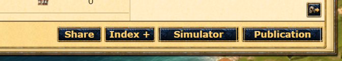

Indexing reports
Use the 'Index +' button to upload the report to your GrepoData account. The index button will be added to reports in your inbox and on reports posted on your alliance forum. When you join a GrepoData team, your indexed reports will be shared with your teammates.